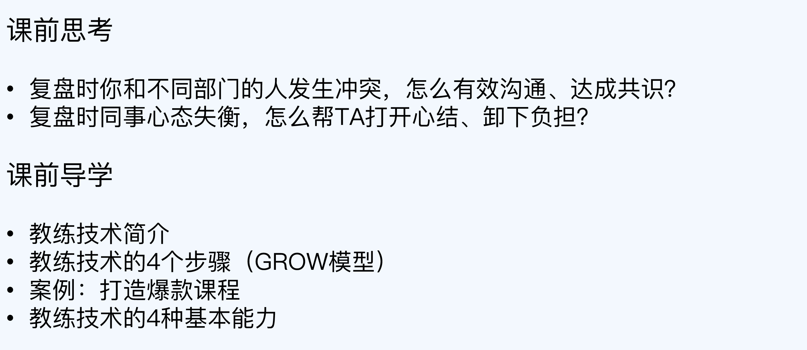
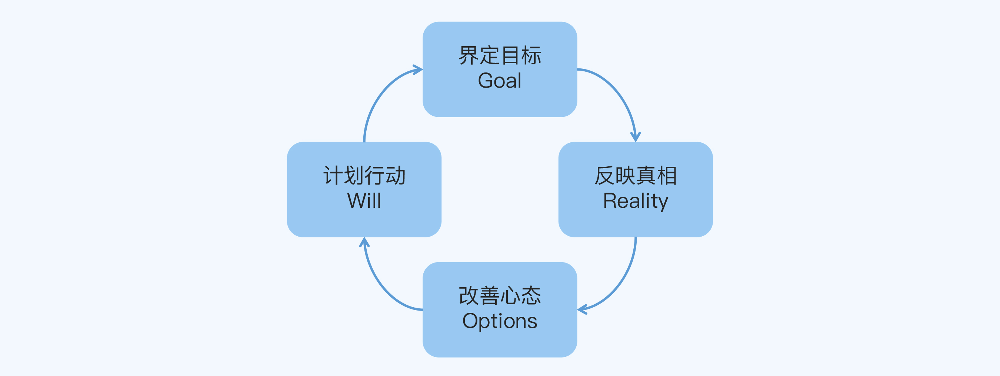
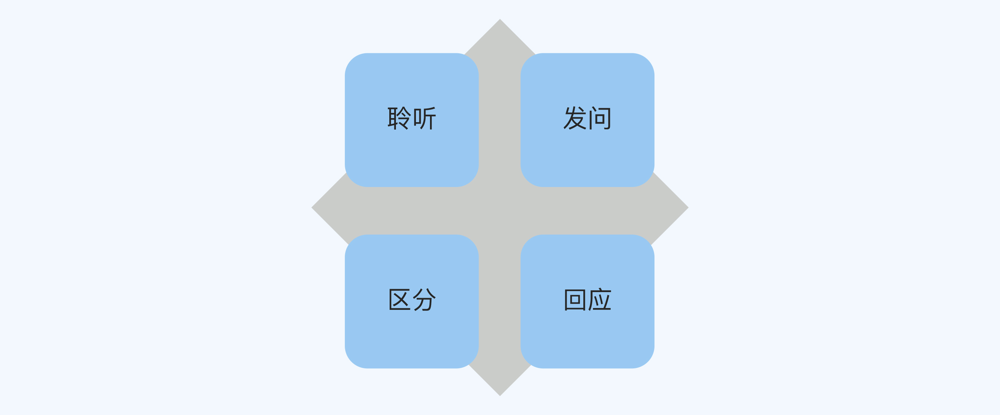
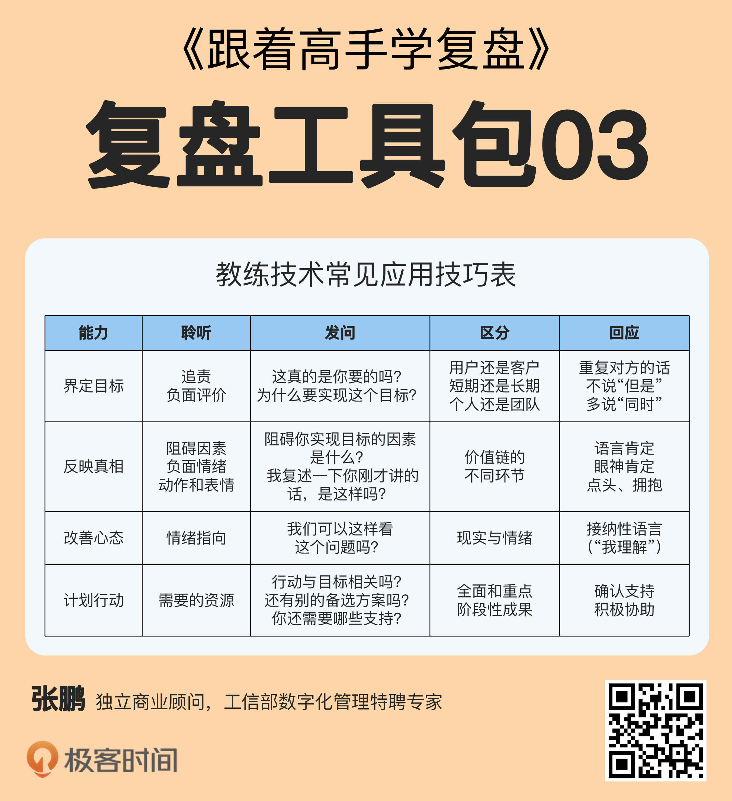

- 00 开篇词 为什么每个人都应该学会复盘？.md.html
- 01 CLAP模型：一个优秀的复盘模型是什么样的？.md.html
- 02 OPTM框架：怎么使用CLAP模型？.md.html
- 03 教练技术：怎么做复盘才能化解冲突？.md.html
- 04 制度和文化：怎么营造复盘环境？.md.html
- 05 三角法：怎么组建复盘团队？.md.html
- 06 MECE原则：怎么准备复盘资料？.md.html
- 07 五步法：如何召开一次高效的复盘会议？.md.html
- 08 事实比较：如何快速比较目标与结果？.md.html
- 09 分析原因：梳理逻辑时怎样找到切入点？.md.html
- 10 洞察规律：怎样更新认知才能找准发力点？.md.html
- 11 OKR：怎样根据复盘结论制定计划？.md.html
- 12 Double Check：怎么检查评估一次复盘的效果？.md.html
- 13 案例导学：我是怎么帮助企业做复盘的？.md.html
- 14 战略升级：5年增长100倍的跨境电商做对了什么？.md.html
- 15 业务关键点：改进一个点业绩增长50%？.md.html
- 16 组织结构设计：变动一个职位，就能带来100万_月的增量吗？.md.html
- 17 高效赋能：怎么建立流程才能把人效提升3倍？.md.html
- 18 人才培养：怎么把人才转化成实际生产力？.md.html
- 19 预算制定：人头和财务预算到底怎么定？.md.html
- 春节荐书（一）《原则》：在不确定中找到确定.md.html
- 春节荐书（二）《人类简史》：故事的力量.md.html
- 结束语 复盘，见天地见众生见自己.md.html
- 捐赠
03 教练技术：怎么做复盘才能化解冲突？

你好，我是张鹏！
上一讲我介绍了CLAP模型的使用方法。但是在实际做复盘的时候，你可能会经常遇到一个问题，那就是不同部门的员工之间发生冲突。
其实，大部分的冲突都是心态失衡引发的情绪冲突，也就是说，出于某些原因在主观情感上盲目地相信或者刻意地回避一些事情，所以固执地坚持错误的判断。比如，因为被质疑挑战之后面子上挂不住，就上头了，激动地跟人抬杠；又比如因为害怕被追责惩罚，就拼命地甩锅。
这种情况在复盘的各个环节都有可能发生，它一方面会让我们的讨论偏离主线，另一方面也会导致我们无法冷静客观地探讨问题，所以它也成了导致复盘效果不好的一个主要原因。
那么，有什么解决办法吗？当然有了，那就是这一讲我要介绍的教练技术。
教练技术
教练技术的创始人是美国的网球教练添·高威（Tim Gallway）。1975年，他找到了让任何人都能很快学会打网球的诀窍，从而引起了AT&T（美国电话电报公司）的兴趣。AT&T把他的教学方式借鉴到了企业管理领域，于是一种全新的管理方法，教练技术，就这样诞生了。
后来随着AT＆T、IBM、通用电器、苹果、可口可乐和福特等知名企业的引入和推广，教练技术迅速在欧美等地区流行起来。
添·高威在《工作的内在诀窍》这本书中，总结了教练技术的公式：-
教练的追求并不是让学员因为不那么精湛的技术而感到羞愧，而是帮助学员提升表现，这种帮助具体可以分为两个方面，消除障碍和激发潜能。
这恰恰就是教练技术适合用来做复盘的原因，因为复盘的目的是优化，复盘团队的追求就是帮助团队和个人学习成长，从而拥有解决问题的能力。
所以，优秀的复盘组织者（或引导者）和厉害的体育教练一样，都是让团队成员的心态经历从“不行”到“行”的转变。
我做咨询顾问的过程中，除了帮助客户分析问题，提供相应的建议或者方案，还有很多的时候是担任高管（比如CEO）的复盘教练。我发现，就算是能力差不多的人，做出来的成果可能也有很大的差距，其中一个非常重要的原因就是他们做事时的心态不同。
我的任务并不是直接插手帮他们把活儿干了，而是当一个启蒙者、激励者、支持者和守护者，通过教练技术帮助他们发掘自己的潜能，探索出更多的可能性，从而更加快捷和从容地达成目标。
GROW模型
教练技术的应用可以分为四个步骤，英文首字母刚好组成GROW，所以又叫GROW模型，如下图所示：

- Goal（界定目标）：放下情绪冲突的意气之争，聚焦于真正的目标探讨。
- Reality（反映真相）：Reality本意是“事实”，这里我说的是“真相”，因为我想强调要从行为的表象中意识到心态的本质。
- Options（改善心态）：Option本意是“选项”，这里我说的是“心态”，因为我想强调不但要关注方案上的选择，更要关注心理上的选择。
- Will（计划行动）：积极地制定行动计划，跨越障碍，解决问题，达成目标。
接下来，我通过一个真实的案例来为你说明教练技术的GROW模型到底是怎么用的。
案例：打造爆款课程
前段时间，我参加了一家英语培训学校的战略复盘会。老板提出了一个目标，在一个季度内打造出新的爆款课程，从而提升引流效果。结果围绕这个目标，研发部门的A主管就和营销部门的B主管发生了一些摩擦。
第一步 界定目标
研发的A主管之前的主要工作是对老产品做优化迭代，还没有从0到1打造爆款的经验，所以她问了一个问题：“到底什么是爆款课程？”
营销的B主管说：“很简单啊，就是那些卖得很好的课程啊。”
A主管听了这话，反问道：“难道我们之前的课卖得不好吗？”气氛一下子变得有点剑拔弩张的感觉。
其实像这样的摩擦，在很多公司的产品和销售部门都会经常发生。别人轻描淡写的一句话，在自己听来，可能就是对自己专业程度或者工作成绩的否认。
实际上，A主管负责迭代的课程一直卖得不错，只是因为光靠以前的老课，公司增长稍微有点乏力，所以老板才想要打造新的爆款。
我马上意识到这是重点跑偏的信号，如果不想办法收住，复盘会就会从“大家对如何打造爆款的讨论”，变成“两位主管对能力和业绩的争论”。
所以我赶紧说：“小A，之前的课程你们做得很棒！接下来，公司还需要推出更多的爆款课程，非常需要你们的支持！”
听完我的话，A主管的情绪缓和了一些，继续向大家寻求认可：“超级受孩子们喜爱的课程就是爆款，对吧？”
大家都纷纷支持她：“是的，超级受孩子们喜欢的课程就是爆款。”
B主管继续说：“小A，你说得没错，超级受孩子们喜欢的课程才可能成为爆款，同时我们也要考虑一下买单的人，也就是家长的需求。比如，家长花了这么多钱，能够收获什么？”
这时，B主管做了一个特别好的区分：对于少儿课程来说，用户和客户是分开的，用户是孩子们，客户是家长。所以爆款也分为两个层面，既要是用户的爆款，也要是客户的爆款，也就是说，既要孩子们超级喜欢，也要家长愿意买单。
手机游戏就是反例，孩子们超级喜欢，但是家长往往特别抗拒。
于是，包括A主管在内，所有都达成了共识：爆款课程是孩子超级喜欢、家长又愿意买单的课程。
第二步 反映真相
接着，B主管又问：“小A，可以说一下你打算怎么打造新的爆款课程吗？”
A主管回答说：“我们准备继续升级原来的课程，包括增加更多互动性的环节，加大知识密度等。”
我察觉到了问题，A主管虽然认可了对爆款课程的定义，但内心还是在隐隐地抗拒做新课，所以我问她：“小A，你去一线多吗？”
A主管说：“嗯嗯，我们每个月都有去校区的，我会和老师沟通很多关于学生和家长的情况。”
我继续问她：“那你会亲自给孩子们上课吗？”
A主管沉默了，一直不说话，我们都不知道为什么，但是她眼圈越来越红，眼泪都快掉下来了。旁边的同事连忙递给她一包纸巾，她在哭出来的同时说道：“对不起，我不敢去上课……”
这句话震惊了在场的所有人。
之前我就听到有人反馈说，A主管好像不太愿意去一线上课。只不过当时他们都觉得A主管可能是认为上课这项工作太简单了，用不着身为教研主管的她亲自去做，完全没想到她居然是因为害怕而不敢去。
要知道，爆款一定是基于对用户需求的洞察来打造的，如果没有保持跟一线用户群的深度接触，要从哪里得出深刻的洞察呢？
不过，使用教练技术的时候千万不能急于灌输结论，而应该想方设法地帮助对方自主提升。于是我带头行动，并示意参与复盘的其他人一起拥抱A主管，跟她说：“没事没事，小A你是最棒的！”
很明显，A主管在大家的支持和鼓励中得到了力量，她停下了哭泣，开始吐露原因：“其实一年多以前，我也在一线上过课。当时我自己感觉上课的效果很好，孩子们反馈也特别好，但是家长的付费转化率却很低，甚至比一些新老师都低。”
第三步 改善心态
当A主管坦诚地说出这个心结的时候，问题就变得简单了。
她因为害怕转化率低，被同事看不起，就不敢去一线上课；又因为长期没有在一线直接接触孩子和家长，就得不到深刻的洞察，更加害怕转化率低，也不敢做新课，结果就掉进了恶性循环当中。
问题的根源就在于，她因为看到了自己的一个短板，就否定了自己的全部，从此在个别方面变得很不自信。长期处在这种状态下，她的心理负担越来越重，所以才会因为一些小事就激化了情绪。
于是，我帮A主管做了一个区分：“给孩子上课，带团队做课，向家长卖课，是三种完全不同的能力。公司既然安排你当教研主管，就是肯定了你的业务能力，尤其是上课和做课的能力。至于转化率不高，可能有别的原因，比如你长得太好看，家长怕孩子上课分心。
“但是你现在的职责不是去做转化，而是要打造出新的爆款课程，重新回到一线上课，直接接触孩子们和家长，这是获得洞察最好的方式。”
其实真正的原因更可能是A主管上课特别注重互动性和趣味性，结果很多家长看到孩子学得那么开心，反而担心学不到东西。不过当时为了迅速引导她调整心态，我故意那么说的。
其他人也跟着说了很多玩笑话来打趣她。终于，A主管卸下了负担，非常认可打造爆款产品需要回到一线这一点，于是她开始制定接下来的行动计划。
A主管的坦诚，既深深地打动了我，也赢得了所有人的真心支持。在后续的工作中，我发现这份坦诚也给整个团队带来了力量。
第四步 计划行动
最终，A主管不但决定回到一线上课，而且还补充了竞对研究等内容，她的计划是这样做的：
- x月x日之前，完成按照年龄段/学科的竞对SWOT分析。
- x月x日之前，协同教研部门同事，在不同校区一线上课xx课时，积累至少100个孩子1000学时的学习观察。
- 每周迭代一个新品的版本，在不同的校区检验效果，同时做阶段复盘，并且将复盘结论记入公司知识库，交由其他同事交叉验证。
怎么样，这样的A主管很棒吧？其实你的身边可能也有很多这样的同事，他们原本可以很好地理解你的想法，配合你的工作，和你一起完成目标，只不过因为一时的心态问题，站在了你的对立面，和你发生冲突。
但如果你掌握了教练技术，就可以有效地和他们沟通，帮助他们调整好状态。
四种基本能力
刚才我已经介绍了教练技术的4个步骤，带你了解了使用的流程。
那么，怎么才能用好教练技术呢？这就需要你培养4种基本能力了。- 
- 聆听：通过聆听发现对方可能存在的问题，比如我从一开始的对话中，听出了A主管的情绪变化是因为担心自己不被认可。
- 发问：通过提问让对方袒露出真实的想法，比如我通过问A主管有没有亲自去一线上课的问题时，找出了她的心结。
- 区分：通过区分帮对方卸下心理上的负担，比如我区分了上课、做课和卖课的能力，帮A主管重拾信心。
- 回应：通过回应及时给予对方有力的支持，比如我对A主管的拥抱、鼓励和调侃，帮她恢复到更加积极的心态。
当你拥有了这4种基本能力，就能像我一样非常顺利地使用教练技术了。我把4种能力在4个阶段的常见应用技巧总结在了下面这张表格里，供你参考。

注意，这张表只选取了一部分具有代表性的技巧，并没有总结所有的技巧，你需要结合自己的工作实践慢慢扩充完善它。这个扩充完善的过程，就是你自己提升能力、沉淀经验的过程了。
小结
这一讲，我为你讲解了教练技术，并通过一家英语培训学校的例子，为你说明了教练技术的使用方法。现在，我们回顾一下重点内容：
- 教练技术追求的是帮助对方提升表现，这种帮助可以分为两个方面，消除障碍和激发潜能。复盘时使用教练技术，可以和对方有效沟通，化解冲突，帮助团队和个人成长。
- 教练技术包括4个步骤，界定目标，反映真相，改善心态和计划行动，它们组成了GROW模型。
- 教练技术需要4种基本能力，聆听，发问，区分和回应。你可以通过扩充完善技巧表格，来提升能力、沉淀经验。
思考题
这就是今天的全部内容，留一道课后思考题给你吧。
请你回忆一下，在以前的复盘过程中，有没有因为心态失衡而跟同事发生冲突呢？当时心态出现问题的人是你还是对方？在这一讲学完教练技术之后，你觉得当时怎么处理会更好？
欢迎你把答案写到留言区，和我一起讨论。
© 2019 - 2023 Liangliang Lee. Powered by gin and hexo-theme-book.